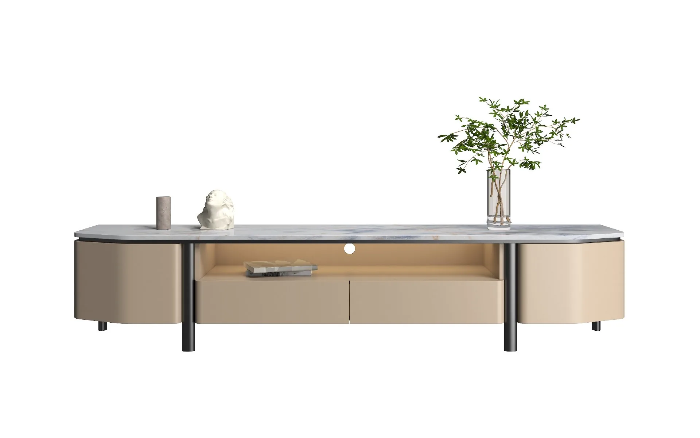
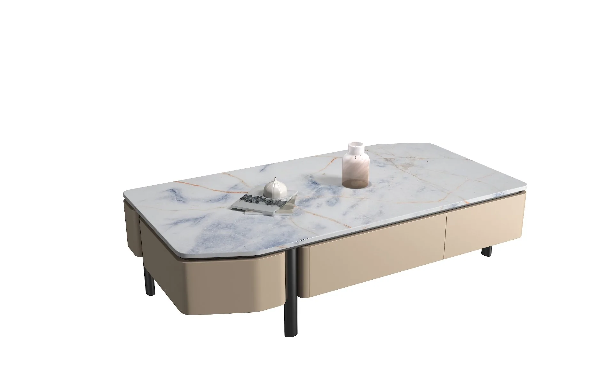
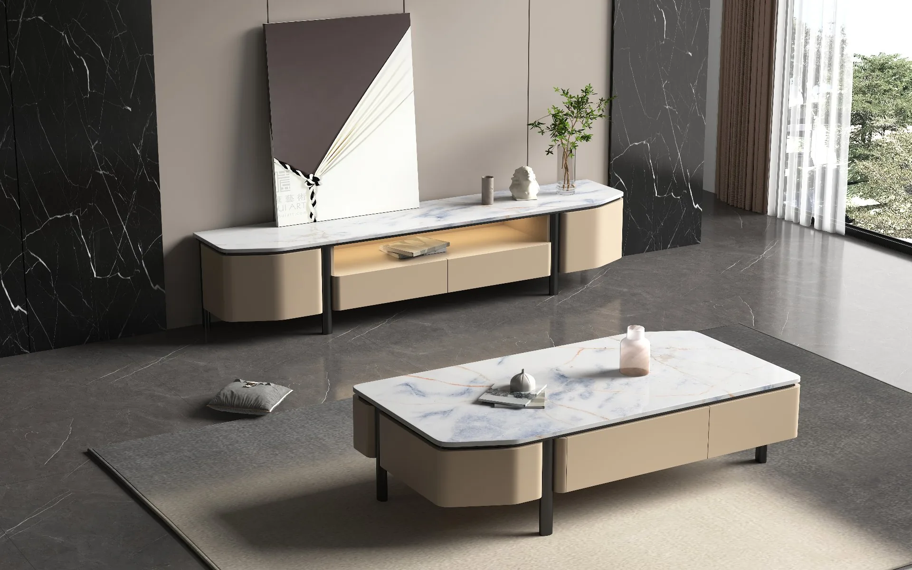

01
茶几 · 地柜
茶几地柜 · Coffee Table & Console
2024

一组可自由组合的茶几与地柜系统。台面选用蓝白相间的大理石纹岩板， 柜体以香槟米色覆膜收边，转角处以倒角处理，让硬朗的石材与圆润的柜体形成对照。
开放式置物层与抽屉组合让收纳不再隐藏在柜门之后， 台面下沿的暖光带为陈设提供一层柔和的视觉引导。
- 材质岩板 · 烤漆 · 金属脚
- 表面处理哑光覆膜 · 倒角
- 结构模块化组合
- 年份2024

